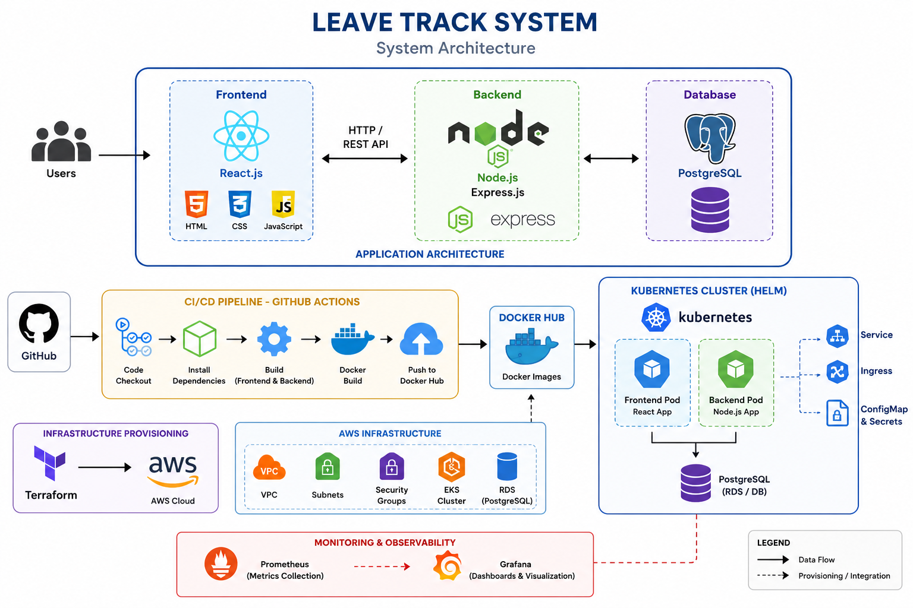
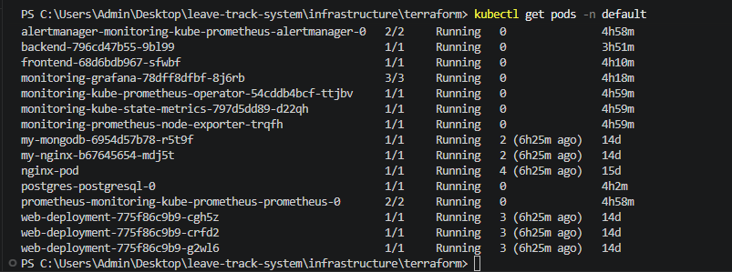
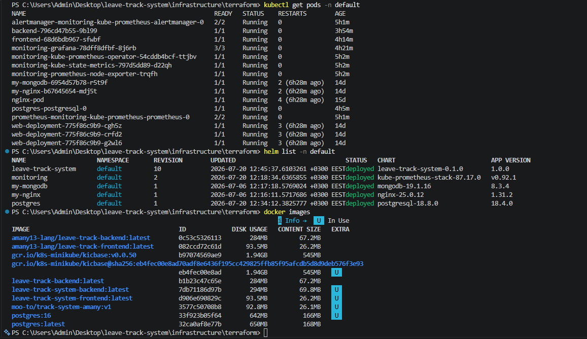

Terraform Infrastructure
Terraform provisions the AWS infrastructure.
- VPC
- Public & Private Subnets
- Internet Gateway
- NAT Gateway
- Route Tables
- Security Groups
- EKS Cluster
- RDS Database

DevOps Integrated Diploma Final Project
Leave Track System is a full-stack Leave Management application developed using React, Node.js, Express, and PostgreSQL. The project follows modern DevOps practices by containerizing the application with Docker, deploying it using Kubernetes and Helm, provisioning infrastructure with Terraform, and automating the deployment process through GitHub Actions.
The application consists of a React frontend, Node.js backend, PostgreSQL database, Kubernetes cluster, monitoring stack, and CI/CD pipeline.

This video demonstrates the Leave Track System in action, including authentication, dashboard, leave management, and application features.
Docker images are created for both backend and frontend services.
docker build -t leave-track-backend ./backend docker build -t leave-track-frontend ./frontend docker compose up -d

The application is deployed to Kubernetes.
kubectl get pods kubectl get svc kubectl get deployments

Helm is used to package and deploy the application.
helm install leave-track-system ./helm helm upgrade leave-track-system ./helm helm list

Terraform provisions the AWS infrastructure.
GitHub Actions automates the software delivery process.

Monitoring is implemented using Prometheus and Grafana.


leave-track-system/ ├── backend/ ├── frontend/ ├── helm/ ├── infrastructure/ │ └── terraform/ ├── docs/ ├── .github/ │ └── workflows/ └── README.md